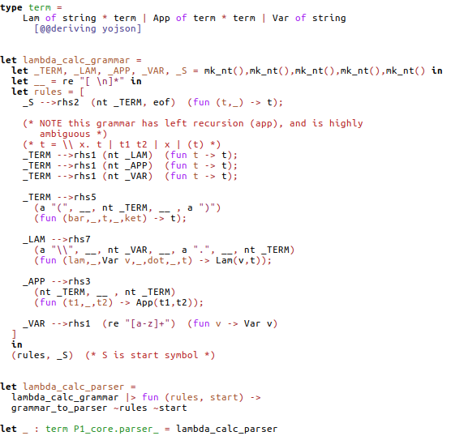

Date: 2018-06-14
Categories: research; parsing
A typed DSL for parsing
I have played around with various forms of parsing for many years. ("Too many" most other researchers would say at this point.) Recently I have been looking at alternatives to combinator parsing. The aim is to have a DSL which captures all the nice things about combinator parsing (type inference, type checking, flexibility etc) but without committing to the parsing strategy employed by combinator parsing (parse prefixes of the string - this is inefficient for obvious reasons).
My current best effort can be found in the p1_extra GitHub repository. For a grammar like this:
S -> E eof
E -> E E E
E -> "1"
E -> epsWith actions which compute the "sum" of the span parsed:
S -> E eof {{ fun (x,_) -> x }}
E -> E E E {{ fun (x,y,z) -> x+y+z }}
E -> "1" {{ fun _ -> 1 }}
E -> eps {{ fun _ -> 0 }}The OCaml code looks like this:
(* S -> E; E -> E E E | "1" | eps *)
_S -->rhs2
(nt _E, eof) (fun (x,_) -> x);
_E -->rhs3
(nt _E,nt _E, nt _E) (fun (x,y,z) -> x+y+z);
_E -->rhs1
(a "1") (fun _ -> 1);
_E -->rhs1
eps (fun _ -> 0);
Compared to the informal version, we can see that there is an
injection nt from nonterminals to "elements" (things that can appear
as part of the rhs of a production). Also, we have to give the arity
of the production explicitly (rhs1, rhs2 etc). Otherwise this
looks pretty good.
The point is: from this definition we can generate a combinator parser, but we can also generate eg an Earley parser, or any other kind of parser. Moreover, the IDE (merlin/tuareg) will identify any type mistakes (or arity mistakes) we make while defining the grammar. So this seems pretty close to optimal for a grammar-with-actions parsing DSL.
Another example, perhaps more compelling, is lambda calculus:

Note that the grammar spec has left recursion and is highly
ambiguous. Even so, this spec can be transformed into a parser in a
very straightforward way - by applying grammar_to_parser to the
rules and the start symbol (this is the defn. of
lambda_calc_parser).
Related posts:
- 2020-05-01 John Whitington PhD viva
- 2020-02-05 On the need for PhD viva chairs
- 2020-01-20 SQLite assumptions, or how to corrupt an SQLite database
- 2019-12-18 VeTSS annual summary
- 2019-08-30 B-tree random write performance
- 2019-08-21 ML'19 Workshop at ICFP: A key-value store for OCaml
- 2018-07-02 Funded PhD places
- 2018-06-14 A typed DSL for parsing
- 2018-05-30 Potential improvements in filesystem performance
- 2018-05-22 First Python program: an Earley parser!
- 2018-02-01 New OCaml library: path resolution
- 2017-11-14 New OCaml parsing algorithm: tjr_simple_earley
- 2017-09-17 Two new OCaml libraries: P0 and tjr-csv
- 2017-09-06 ICFP most influential paper from 10 years ago
- 2017-03-16 tjr-btree: a CoW B-tree library in OCaml
- 2016-02-19 Tree-structured text
- 2016-02-09 Simple implementation of an Earley-like parsing algorithm
- 2015-06-26 P5 scala parsing library
- 2015-04-27 Why operational models?
- 2014-12-19 Parsing the IMAP protocol
- 2014-12-04 Parsing examples
- 2014-11-26 Isabelle on 64bit ubuntu with 32bit libraries
- 2014-11-21 Talk on parsing at the University of Sussex
- 2014-09-26 P1 combinator parsing library for OCaml
- 2014-09-26 E3 earley parser library for OCaml
- 2014-09-18 SLE 2014 conference, and Parsing at SLE workshop, slides
- 2014-09-07 ICFP 2014, OCaml workshop, slides and video
- 2014-07-11 P3 paper accepted for SLE 2014
- 2014-04-15 New release of P3 code on github
- 2014-03-02 New release of P3 code on github
- 2013-12-16 New release of P3 code on github
- 2013-12-03 Implementing algorithms efficiently
- 2013-11-08 Talk on parsing and P3 given at Cambridge
- 2011-12-01 Verified parsing